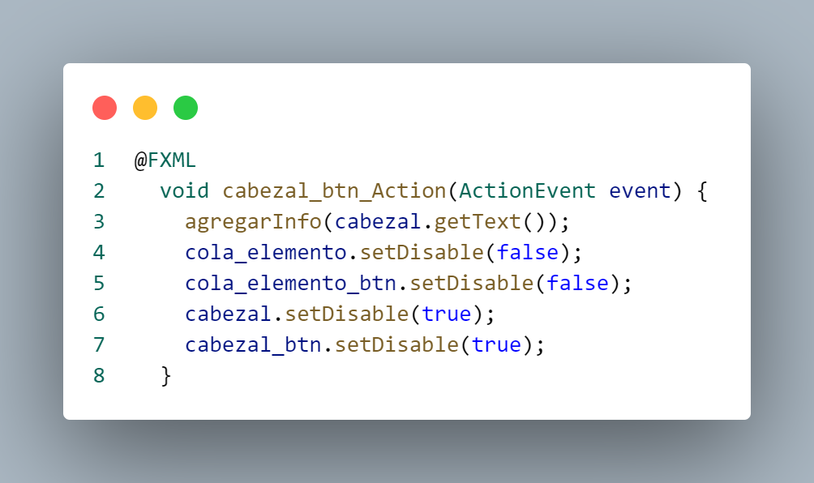

|
Funcionamiento de código
Main.java
Clase Main
El código Java proporcionado en la clase `Main`
actúa como un punto de entrada para la aplicación.
En el método `main`, se invoca el método `main`
de otra clase llamada `App`, transmitiendo
cualquier argumento de línea de comandos
proporcionado (`args`). Este enfoque sigue la
convención común de separar la lógica principal
de la aplicación en una clase específica (`App`
en este caso) y utilizar una clase de entrada
(`Main`) para iniciar la ejecución, promoviendo
así la modularidad y la claridad en la estructura
del código.
App.java
Librerias
Este código en Java importa las clases necesarias
de la biblioteca JavaFX para construir una aplicación
de interfaz gráfica de usuario (GUI). La clase
principal extiende `Application` y, presumiblemente,
implementa el método `start`, donde se cargan
elementos de la interfaz desde un archivo FXML
mediante la clase `FXMLLoader`, se configura la
escena con un nodo raíz (`Parent`), y se muestra
la aplicación en una ventana (`Stage`). También
importa `Objects` para operaciones de objeto y
`File` para manipulación de archivos. Aunque el
código en sí mismo no realiza acciones específicas,
sirve como base para el desarrollo de una aplicación
JavaFX que involucra la carga de interfaz gráfica
desde un archivo FXML y la manipulación de archivos.
Clase App
En este método, se
carga la interfaz de usuario desde un archivo
FXML, se configuran propiedades de la ventana,
se establece un controlador para el evento de
cierre que ejecuta el método `eliminarArchivo()`,
y se muestra la aplicación con un título específico.
Además, se fija un tamaño mínimo y se muestra
la ventana del escenario con las dimensiones
iniciales y propiedades configuradas, formando
así la estructura inicial de la interfaz gráfica
para un simulador de planificación de discos.
Metodo eliminarArchivo
El
método `eliminarArchivo()` elimina el archivo
"info.txt" si existe, imprimiendo mensajes en
la consola según el resultado de la operación.
La función `main` inicia la aplicación JavaFX
invocando `launch(args)`, que, a su vez, ejecuta
el método `start` de la clase `App` para configurar
la interfaz gráfica. En conjunto, el código
proporciona una estructura básica para una
aplicación que carga una interfaz gráfica y
realiza operaciones de archivo, como la eliminación
del archivo "info.txt".
Controladores.java
Librerias
Este código Java define un paquete llamado
`Controladores` y posteriormente importa
diversas clases y paquetes relacionados
con la programación de interfaces gráficas
de usuario (GUI) utilizando JavaFX. Entre
las clases importadas se encuentran aquellas
relacionadas con la creación de componentes
de interfaz gráfica, como botones, tablas
y celdas, así como clases para manejar eventos
de usuario, leer y escribir archivos, y
trabajar con listas observables. Además, el
código incluye la definición de una clase que
implementa la interfaz `Initializable`, sugiriendo
que se utilizará para inicializar controladores
de interfaz de usuario.
Clase MainControlador

La clase `MainControlador` implementa la interfaz
`Initializable` para la inicialización de controladores
en una aplicación JavaFX. Los campos anotados con
`@FXML` están vinculados a elementos de la interfaz
gráfica, como áreas de texto, campos de texto,
botones y una tabla. La clase también contiene
listas para almacenar resultados y números enteros.
Se espera que esta clase gestione la lógica y la
interacción de la interfaz gráfica relacionada con
la simulación o aplicación, incluyendo la manipulación
de la cola, información del cabezal y pistas, así como
la presentación de resultados en una tabla y visualización
en un área de desplazamiento.
Metodo Initialize

Este método `initialize` implementa la interfaz
`Initializable` y se ejecuta al inicializar el
controlador. Su función principal es configurar
la tabla de resultados en la interfaz gráfica.
Utiliza `setCellValueFactory` para asociar las
propiedades de las columnas de la tabla (`metodo_resultado`
y `longitud_resultado`) con los métodos
`getAlgoritmo()` y `getPromedio()` de la clase
`Resultados`, respectivamente. Esta configuración
establece cómo se deben mostrar los datos de la
lista de resultados en la interfaz gráfica,
asegurando que la tabla se llene correctamente
con la información correspondiente.
Metodo Cabezal_btn_Action

Este método, vinculado a la acción de un botón
en la interfaz gráfica, realiza varias acciones
al ser activado. Primero, llama a un método
denominado `agregarInfo` pasándole el texto
actual del campo de texto `cabezal`. Posteriormente,
habilita el campo de texto `cola_elemento` y
su botón asociado, al tiempo que deshabilita
el campo `cabezal` y el botón `cabezal_btn`.
En conjunto, estas acciones sugieren que el
método está diseñado para procesar la entrada
del usuario desde el campo `cabezal`, llevar a
cabo alguna operación relacionada con la información
proporcionada, y ajustar el estado de los elementos
de la interfaz para guiar la interacción del usuario
en un flujo específico de la aplicación.
Metodo cola_elemento_btn_Action
Este método, vinculado a la acción de un botón
en la interfaz gráfica, realiza diversas acciones.
En primer lugar, llama al método `agregarInfo`
con el contenido actual del campo de texto
`cola_elemento`. Luego, lee el contenido del
archivo "info.txt", excluyendo las dos primeras
líneas, y construye una representación de cola
utilizando un `StringBuilder` llamado `cola`.
Posteriormente, borra el contenido del campo
`cola_elemento`, actualiza el área de texto
`cola_screen` con la nueva información de la
cola y cierra el lector de archivos. En conjunto,
este método procesa la entrada del usuario,
manipula información de un archivo y actualiza
la interfaz gráfica con la representación actualizada
de una cola.
Metodo n_pistas_btn_Action
Este método, asociado a la acción de un botón
en la interfaz gráfica, realiza varias acciones.
En primer lugar, llama al método `agregarInfo`
con el contenido actual del campo de texto
`n_pistas`. Luego, habilita el botón y el campo
de texto relacionados con el cabezal, permitiendo
al usuario interactuar con ellos. Simultáneamente,
deshabilita el campo de texto `n_pistas` y el
botón asociado, impidiendo modificaciones adicionales.
Metodo agregarInfo
Esta función, llamada `agregarInfo`, toma un
parámetro `dato` que se espera sea una representación
en cadena de un número entero. La función
intenta convertir esta cadena en un entero y,
si tiene éxito, agrega ese entero a un archivo
llamado "info.txt". Si ocurre algún error durante
el proceso de conversión o escritura en el archivo,
se muestra un mensaje de error utilizando la clase
`JOptionPane` de Java Swing, indicando que los datos
ingresados no son válidos y que se deben utilizar
números. En resumen, esta función valida, convierte
y agrega un número entero a un archivo, manejando
posibles errores y proporcionando retroalimentación
al usuario en caso de entrada no válida.
Metodo Planificacion_C_LOOK
Este método, vinculado a la acción de un
botón o elemento de la interfaz gráfica
llamado "Planificacion_C_LOOK", implementa
la planificación de discos utilizando el
algoritmo CLook. Inicia limpiando la lista
auxiliar, crea una instancia de la clase
CLook, configura su lectura, ejecuta el
algoritmo, muestra los resultados, agrega
la cola del disco a la lista auxiliar,
verifica si la operación "CLOOK" ya ha
sido registrada en los resultados, y, si
no, añade un nuevo resultado a la lista.
Luego, actualiza la tabla de resultados en
la interfaz y realiza alguna operación para
dibujar el estado del disco. En conjunto,
el método gestiona la ejecución del algoritmo,
la actualización de resultados y la visualización
del estado del disco en la interfaz gráfica.
Metodo Planificacion_C_SCAN
Este método, asociado a la acción de un botón
o elemento de la interfaz gráfica denominado
"Planificacion_C_SCAN", implementa la planificación
de discos utilizando el algoritmo CScan. Comienza
limpiando la lista auxiliar, crea una instancia
de la clase CScan, configura su lectura, ejecuta
el algoritmo, muestra los resultados, agrega la
cola del disco a la lista auxiliar, verifica si
la operación "CSCAN" ya ha sido registrada en los
resultados y, si no, añade un nuevo resultado a la
lista. Luego, actualiza la tabla de resultados en
la interfaz y realiza alguna operación para dibujar
el estado del disco. En conjunto, el método gestiona
la ejecución del algoritmo CScan, la actualización
de resultados y la visualización del estado del disco
en la interfaz gráfica.
Metodo Planificacion_FCFS
Este método, asociado a la acción de un botón
o elemento de la interfaz gráfica denominado
"Planificacion_FCFS", implementa la planificación
de discos utilizando el algoritmo First-Come,
First-Served (FCFS). Inicia limpiando la lista
auxiliar, crea una instancia de la clase FCFS,
configura su lectura, ejecuta el algoritmo,
muestra los resultados, agrega la cola del disco
a la lista auxiliar, verifica si la operación
"FCFS" ya ha sido registrada en los resultados
y, si no, añade un nuevo resultado a la lista.
Luego, actualiza la tabla de resultados en la
interfaz y realiza alguna operación para dibujar
el estado del disco. En conjunto, el método
gestiona la ejecución del algoritmo FCFS, la
actualización de resultados y la visualización
del estado del disco en la interfaz gráfica.
Metodo Planificacion_LOOK
Este método, asociado a la acción de un botón
o elemento de la interfaz gráfica llamado
"Planificacion_LOOK", implementa la planificación
de discos utilizando el algoritmo Look. Comienza
limpiando la lista auxiliar, crea una instancia
de la clase Look, configura su lectura, ejecuta
el algoritmo, muestra los resultados, agrega la
cola del disco a la lista auxiliar, verifica si
la operación "LOOK" ya ha sido registrada en los
resultados y, si no, añade un nuevo resultado a
la lista. Luego, actualiza la tabla de resultados
en la interfaz y realiza alguna operación para
dibujar el estado del disco. En conjunto, el
método gestiona la ejecución del algoritmo Look,
la actualización de resultados y la visualización
del estado del disco en la interfaz gráfica.
Metodo Planificacion_SCAN
Este método, asociado a la acción de un botón
o elemento de la interfaz gráfica llamado
"Planificacion_SCAN", implementa la planificación
de discos utilizando el algoritmo Scan. Comienza
limpiando la lista auxiliar, crea una instancia
de la clase Scan, configura su lectura, ejecuta
el algoritmo, muestra los resultados, agrega la
cola del disco a la lista auxiliar, verifica si
la operación "SCAN" ya ha sido registrada en los
resultados y, si no, añade un nuevo resultado a
la lista. Luego, actualiza la tabla de resultados
en la interfaz y realiza alguna operación para
dibujar el estado del disco. En conjunto, el método
gestiona la ejecución del algoritmo Scan, la
actualización de resultados y la visualización
del estado del disco en la interfaz gráfica.
Metodo Planificacion_SSTF

Este método, vinculado a la acción de un botón
o elemento de la interfaz gráfica llamado
"Planificacion_SSTF", implementa la planificación
de discos utilizando el algoritmo Shortest Seek
Time First (SSTF). Comienza limpiando la lista
auxiliar, crea una instancia de la clase SSTF,
configura su lectura, ejecuta el algoritmo,
muestra los resultados, agrega la cola del disco
a la lista auxiliar, verifica si la operación
"SSTF" ya ha sido registrada en los resultados
y, si no, añade un nuevo resultado a la lista.
Luego, actualiza la tabla de resultados en la
interfaz y realiza alguna operación para dibujar
el estado del disco. En conjunto, el método
gestiona la ejecución del algoritmo SSTF, la
actualización de resultados y la visualización
del estado del disco en la interfaz gráfica.
Metodo setTablaResultados
Esta función, llamada `SetTablaResultados`, se
encarga de actualizar la tabla de resultados en
la interfaz gráfica. Primero, verifica si la
lista de resultados (`resultados`) no está vacía.
En caso afirmativo, ordena la lista de resultados,
limpia los elementos existentes en la tabla
(`resultados_tabla.getItems().clear()`), refresca
la tabla, crea una nueva lista observable (`lista`)
que contiene todos los resultados ordenados,
establece esta lista como los nuevos elementos de
la tabla, y finalmente, refresca nuevamente la tabla
para reflejar los cambios. Si la lista de resultados
está vacía, imprime en la consola el mensaje "No
hay datos".
Metodo Verificar Operacion
Esta función, denominada `VerificarOperacion`,
tiene como objetivo verificar si una operación
con un determinado método ya ha sido registrada
en la lista de resultados (`resultados`). Recibe
como parámetro un nombre de método y realiza un
bucle a través de los elementos en la lista de
resultados. Si encuentra un resultado con el mismo
nombre de método, devuelve `true`, indicando que
la operación ya ha sido registrada. En caso contrario,
si no encuentra ninguna coincidencia, devuelve
`false`, indicando que la operación aún no ha sido
registrada.
Metodo Dibujar Disco
La función `DibujarDisco` se encarga de generar
una representación visual del estado del disco
en la interfaz gráfica. Primero, limpia cualquier
contenido existente en el área de visualización.
Luego, lee información del archivo "info.txt"
sobre el número de pistas y la ubicación de
elementos en el disco. Utiliza contenedores
(`VBox` y `HBox`) para organizar las pistas,
resaltando en rojo aquellas ocupadas, mostrando
una representación visual del disco en colores
alternos. Además, resalta en verde las pistas
visitadas, utilizando la lista `aux`. La función
finaliza ajustando las propiedades de visualización
de la interfaz. En conjunto, proporciona una
visualización detallada y dinámica del estado
del disco.
|